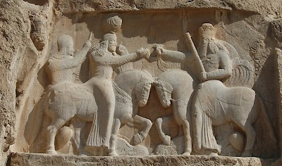

Sassanid princes were considered legitimate heirs of the monarchy and the paramount practitioners and allies of the Šāh in the administration of imperial affairs due to their blood relationship with the Šāh. The princes who ruled the principal imperial states such as Armenia and Sīstān were also the utmost allies of the king in wars and functioned as a guarantor of political treaties through marriages w hich helped the king to resolve vital disputes and expand his power in the vast areas beyond previous borders of the Sassanid’s empire. However, clergy an d aristocracy had gradually seized a considerable part of the king’s power by using numerous intrigues including inciting ambitious princes against an undesirable king . The impact of political consideration s and benefit on the blood relationship between the Šāh a nd princes , eventually became one of the main reasons which led to the decline of the dynasty; therefore, examini ng the various dimensions of this extremely multifaceted relationsh ip is essential to understand to what extent royal family relations , especially the father -son relationship , affected the efficiency and power of a king during the Sassanid era.
Since the royal family was part of the Sassanid society like any other family living under the territory of Sassanids, it is necessary to initially address the family context and sons’ role in Sassanid society to comprehend the relationship between Sassanid kings and princes. This introduction can clarify the sensitive position of princes in the royal family as unique members of Sassanid society. The fact that the society was fundamentally based on the two pillars of property and blood relationship (Christensen, 2006, 228) made family the basic unit of loyalty and trust with full rights and absolute authority. Although attempts were made to establish other central units of power during the Sassanid period, the family remained the prime institution in Sassa nid society (Frye, 1962, 217). The s ociety consisted of lineages based on patriarchy. The ol dest man who usuall y was the father or the grandfather (called Sālār) took responsibility for the extended family and made the crucial decisions which was also true for the royal family according to the evidence (Christensen, 2006, 242; Dezhamkhooy, 2012, 1-2; Mazdapour, 1991, 227-228). The Sālār ’s absolute power was to the extent that he was considered both the guardian and the owner of his children, and they had to obey unquestioningly their father. If the child ren disobeyed their father three times or did not do their duty toward him, they deserved to die (Shaki 1991). The father could also deprive his children of inheritance only if they disobeyed him (3 times) or became apostates from Zoroastr ianism (Christensen, 193 5, p. 74; Shaki 1991). The sons were obli ged to respect their father as he deserved; otherwise, a part of their paternal inheritance was allocated to the mother provided that she was more comp etent (Christensen, 2006, 237). Polygamy and giving birth to a son as a successor ensured the preservation of property within the paternal family and the survival of its offspring (Dezhamkhooy 2012, 3; Mazdapur 1991, 231). Having a son was so important that a form of marriage (čagar-marriage) was designed to produce children for a man who died without a male heir (Christensen 1935, 74-75; 2006, 239; Macuch 2010, 142-143; Mazdapour 1990, 156; Minovi 1975, 67-68). In another type of adoption, the head of the household employed one or more s tepfathers and ste pmothers from inside or outside his family to legally adopt their son (not daughter) as his own child. This practice was even done by men who already had several children, and they sometimes accepted their grandchildren as adopted children (Macuch 2010, 143-144). If a man was infertile, his wife married another man to give birth to a son for him (Daryaee 2009a, 60-61). All the efforts of the judicial system and the family system in t he Sassanid society were to maintain the integrit y of lineage and property within the family (Macuch 2010, 145). Among other factors that increased the importance of having children, especially male ones, was the belief that having a child who d oes good deeds from religi ous perspective is also an achievement of their father. Interestingly, as much as good deeds of children were effective for the father (Mazdapour 1990, 128-129; Tafazzoli 1975, 45), their sins also affected him after death based on Zoroastrianism (Bahraman 2014, 69). Although royal famil y must have been completely different in man y wa ys from a t ypical famil y in Sassanian perio d, these basic traditional-religious rules were als o true ab out this uniqu e family. With Šāh as the center of power pyramid in the era, it is not actuall y unlikely that the se rules we re even more severel y applied about the Sassanid princes as the potential heir s of the Šāh. This may lead to revi ew the life of princes as far as evidence allow us.
The evidence gained from the life of the Sassanid kings reveals th at the foundations of both royal family and a middle-class famil y of the Sassanid society were the same. Among the shreds of evidence that shows the importance of family and patriarchal system both among a middle-class family and the royal family are the mention of family lineage addressed in almost all inscriptions of Sassanid kings (Tafazzoli 1997, 86; Lukonin 1971, 40) and also in legal documents associated with the routine life of ordinary peo ple (Dezhamkhooy 2012, 2). Most royal inscriptions include the name, title, name of the father, paternal lineage, and activities of a king, which shows the importance of family lineage, paternal relations, and masculine activities for the Sassanids (Weber 2016).
Like sons in the lower classes, princes were responsible for preserving the generation and property of the Sassanid dynasty. They were also required to pay homage to their father, who had absolute power to make decisions about their lives. The main difference between the royal and a middle-class family was the political roles of both the king and the princess, which often overshadowed or even eliminated their household roles. In addition to the usual duties which boys had towards their fathers and families, the princes were obliged to maintain the monarchy within their lineage, which put them in a perilous and sometimes dangerous position in the Sassanid court. The Sassanid kings put all their efforts into polygamy and reproducing male heirs to keep the power within their house. Having children was so important that if a harem woman were sentenced to death for any reason, her pregnancy was one of the factors that could save her life (Nöldeke 1979, 77-79). As it is clear in most of the relie fs and other pictorial representation s of this period, the role of sons and sometimes male descendants of the king is shown to be the closest to that of the king. For example, the choice of a special place to engrave the image of the children in the relie fs of Ardašir's coronation in Naqš-e Rostam and Naqš-e Rajab undoubtedly indicates a clear intention. The meaning can concern the position of these children as prominent members of the royal family and their relationship with the monarch_ father-son relationship (Miri and Jalali 2016, 155-156). Ardašir, while introducing the children, informed everyone that his generation would continue through these princes (Christensen 2006, 61-62; Miri 2017, 69-70). On the rock relief of Ardašir at Firuzābād, he is depicted taking the ring of power from another figure (Ohrmazd), while the crown prince, Šāpur I, and two other princes or aristocrats are standing behind him (Miri and Jalali 2016, 161; S. Shahbazi 2002). Ardašir and Šāpur are shown facing each other on the third type of Ardašir’s coins which may have been struck to introduce Šāpur as the crown prince (Shahbazi 2002; Wiesehöfer 1986).
The political policy had to be shaped by the relationship between the king, royal family, and landlords (including members of the old Parthian aristocracy) from the earliest days of the monarchy in the Sassanid dynasty (Wiesehöfer 1986). The royal family, the princes, had several political roles that made them the key, yet dangerous, court members, whose presence was essential to the dynasty's survival, and the king's power depended on them. Princes as the king's reliable allies: Princes appeared as the main and trusted allies in wars due to their blood relationship with the king; Šāpur I accompanied his father in Ardašir’s campaign against the Parthians and in the battle of Hormozgān (Christensen 2006, 60-61; Shahbazi 2002). In the relief of Dārābgerd, Šāpur wears the crown of Ardašir which symbolically depicted the joint victory of father and son. Penetrating deep into Syria to the coast and plundering what he found, Šāpur was leading an army to the depths of Syria, while Horm ozd-Ardašir invaded Lesser Armenia and Cappadocia (Shahbazi 2002; Shayegan 2004). Among the reliefs of Bahrām II, there are two commemorations of victories in Naqš-e Rostam, one related to Bahrām himself and the other probably related to one of the princes who defeated two enemies (Shahbazi 1988). Ardašir, the half-brother of Šāpur II, seems to have been involved in Šāpur II ’s victories against Rome because he portrayed the Roman emperor under his hors e in the relief in Ṭāq-e Bostān (Shahbazi 1986). During Pērōz’s first campaign against the Hephtalites, he and Kawād, his son, were captured in a battle near Gorgān. In a treaty with the Hephtalite ruler, Pērōz was obliged to commit himself to maintaining permanent peace and to pay a cash ransom. Only then c ould Pērōz and his army depart. Kawād, however, was kept hostage for two years by the Hephtalites. Firuz's next campaign against the Hephtalites was accompanied by several princes who were likely to assist him in the war (Schippmann 1999). Following the division of the Hephtalite kingdom between Persia and the Turks during the reign of Ḵosrow I Anōšīravān, Sinjibu (Silzibul) (ḵāqān of Turk s) endangered the borderlands of eastern Persia. Ḵosrow sent his son, Hormozd, to deal with him and as a re sult of political neg otiation s, the ḵāqān retreated to his territory. Considering that Hormozd was the granddaughter of Sinjibu, Ḵosrow seems to have known that by sending Hormozd to war against his grandfather, he could avert the danger without huge damage or difficulty (Shahbazi 2004b). Princes as rulers of the imperial states: Princes also served the king as trustworthy rulers for administrating and securing important imperial territories like Armenia, Sīstān, Gēlān, and Mēšān. To determine how vital this task was, we must notice the importance of gaining control of these regions for the rise of the Sassanid dynasty to power. There was no unified empire by the end of the Parthian period and power was separated among the Parthians in Media and Mesopotamia and the Indo-Parthians in the east, besides some small kingdoms in Persia, Elam, and other areas between Jaxartes and Euphrates (Rezakhani 2017, 45). Although Ardašir was able to defeat Ardavān, it was only after his victory over Farn-Sasan, as the last Indo-partian king, that Ardašir could call himself ‘Šāhān Šāh’ since Farn-Sasan’s rank and political power were higher than Ardašir (Rezakhani 2017, 39-40). Furthermore, the Indo-Parthian ancestors of Farn-Sasan were the most central political institution in most parts of eastern Persia from two centuries before the rise of the Sassanids. Such a defeat was a confirmation of the power of Ardašir and the establishment of a new empire (Rezakhani 2017, 30).
Although the Sassanid princes wer e primarily considered the most focal factor in implementing the king's orders and policies due to their blood relationship with the king, their numerous political roles and vital dependence of the king to them as his successors and the guardians of the monarchy within the Sassanid dynasty made the king always take a conservative appro ach towards his sons. It was advised to the king to be amiable in dealing with his family in the 12 principles of Bozorgmehr's statehood for Ḵosrow (Nawabi 1959, 305 & 315; Nöldeke 1979, 408), a popular-religious andarz composition in Pahlavi. Šāh was also expected to behave well with the princes, arrange for them to associate with the nobles, provide their living expenses and education, and organize their marriage (Christensen 2006, 354-355; Nöldeke 1979, 535). However the king, both as the family head and as the main element of the flexible dictatorial system on which the Sassanid Empire was based, had the absolute power to decide about the life of his sons, which made their relationship different, and in many cases, more violent than a father-son relationship in the middle-class families of the Sassanid society (Nöldeke 1979, 473).
Asawārān and princes formed the first class in the court of Ḵosrow (Christensen 2006, 265 & 289), which placed the princes in the highest political and social position after the king. They sat at the shortest distance from the king in official ceremonies (Christensen 2006, 289). They were also required to pay formal homage to their father (the king) and were not allowed to work at the royal court because they constantly competed causing their authority and glory to diminish in the court (Christensen 2006, 73-72). Šāpur lived in a separate house (palace) from Ardašir, as mentioned in the incident that result in revealing Hormozd ’s true identification to Ardašir (Bal’ami 1974, 899).
According to the Letter of Tansar, Ardašir decided that the Crown Prince should not be elected by the king so that there would be no animosity and enmity between the princes over it, and the Crown Prince would not take action against the Šāh, the Šāh would not become suspicious of him, and the enemies would not seek to destroy the Crown Prince (Christensen 193 5, 178-179; Minovi 1975, 73). As we know, Ardašir appointed Šāpur I as his successor who also reigned with hi s father for a short time (Nöldeke 1979, 69; Wiesehöfer 1986), but considering that the Letter of Tansar was compiled centuries after the re ign of Ardašir, one could suggest the complexity of the relationship between the king and the princes later by closely examining the reasons for not choosing the crown prince by a king. The Sassanid king had to manage the disputes between the princes, prevent the coup or revol t of the princes, and prevent the enemies from assas sinating the elected crown prince. All these issues have caused the personal bond between the king and the princes to be so weakened. It was to the extent that the princes, like other court members, were not allowed to enter the king's room without the official permission of their father (Christensen 2006, 291).
On the other hand, the nobles and clerics had been constantly trying to disrupt the relationship between the king and princes to gain more power at court; for example, Hormozd I was accused of rebellion against Šāpur I and forced to cut off his hand to prove his innocence from this fatal charge as physical disability of a prince abdicate him from becoming a king (Bal’ami 1974, 899-900). However, Horm ozd reigned after his father for a brief time despite his disability revealing that this law might be violated and had not always be en observed. The complexity of the relationship between a king and his sons is obvious from the incident that happened between Šāpur and Hormozd; their kinship bond made them survive the difficulty of their political relationship but was not that strong to acquit Hormozd without any damage. The court probably had a problem with Hormozd, and the reason for his short reign was also their opposition against him (Nöldeke 1979, 102-103).
The appointment of Bahrām II as the successor of Bahrām I, despite the presence of Narseh as a legitimate claimant of the throne, was another manifestation of the contrast between a king’s political role and family role which eventually led to a great war within royal family twenty years later (Weber 2016). Bahrām I certainly considered his son more worthy than his stepbrother, Narseh, Althou gh the latter had proved his sufficiency for the monarchy by ruling over the vast area of eastern Iran. On the contrary, Bahrām II had no political experience or achievement before throning (at least as far as we know). In practice, he expressed more interest in fami ly affairs such as protecting the queen and the pr ince from a l ion or giving f lowers to the queen as portrayed in his rock reliefs (Christensen 2006, 167-168; Daryaee, 2009a, 11) rather than his duties as a monarch which perhaps was the principal cause of significant raise of the political power of Kartir and other priests during his reign (Lukonin 1971, 175-176). It seems that ignorance of Bahrām I by his father (Šāpur I), which is obvious from the Naqš-e Rostam inscription (Weber 2016), finally was manifested in Bahrām I's decision to deprive Narseh of being the next king. Later, Narseh tried to restore more power to the royal family, but the court who freed themselves from the successors of Narseh after his short reign, placed the crown on the head of an unborn (Šāpur II) which gave them power for a long time (Nöldeke 1979, 106-107). Bal’ami mentioned that Ardašir (older brother of Šāpur II) was deprived of kingship due to a dispute with Bahrām II (918), but it seems that the power of the clerics and aristocrats had increased at this stage that they were able to elect an infant as the king despite the presence of an adult prince (Bal’ami 1974, 904).
Šāpur II's policy regarding the succession of his son Šāpur III was directly opposed to Bahrām I; Šāpur II seemingly knew that if he wanted the monarchy to pass to his son wi thout any internal disputes, had to recognize the right of his brother, Ardašir, for kingship. Ardašir was also a strong ally in Šāpur’s wars against Rome. Therefore, Ardašir was appointed as the successor of Šāpur by promising that he would resign in favor of Šāpur III after his puberty (Shahbazi 1986). One of the methods used by the Sassanid kings to resolve disputes caused by princes and punish them was to deport them to areas far from the capital to live under supervision; Yazdegerd I deported Bahrām V to Hira due to a disagreement happened between them (Christensen 2006, 199; Klíma 1988; Nöldeke 1979, 185). When Bahrām V became an adult, he decided to see his father. However, Bahrām asked the Roman ambassador to seek his father’s permission for Bahrām ’s return to Hira a year later since Yazdegerd was so tyrannical that Bahrām could not ask him directly. Bahrām’s relationship was better with his guardian, Monzer, than with his father (Bal’ami 1974, 931-932) because Monzar sent Bahrām money as Yazdegerd deprived him of financial resources (Nöldeke 1979, 157).
In the early Sassanid period, kings not only had the main power in managing the affairs of the country but also were in charge of affairs and decisions in their own families, which is well shown in the inscription of Šāpur I. Šāpur I mentioned his political achievements in this inscription, introduced his family and determined the politica l role of his so ns. There was an order in the family relations of the king reflecting the order of the Sassanid Empire, especially via princes appointed as the governor of the different regions to ensure their father’s power over these areas and gain some experience for governing the whole empire in the future as the potential heir of Šāpur I. Several branches had emerged from the very extended royal family after Šāpur I’s reign which each of his successors considered himself the worthiest of the monarchy. The excessive expansion of the royal family and the complex relations between its members during the Sassanid period, in general, constantly fueled the conflicts in the Sassanid court. The culmination of these clashes were the revolts sta rted by Narseh and Qobād Širō y. The claim of Narseh's successor has contrasted with the claim of the successors of Bahrām I. Although the relationship between the king and his sons was still strong during this period, the rise of Kartīr and other priests caused the clergy and aristocra cy to use the princes against the Sassanid kings. The princes no longer saw the king as the absolute ruler; thus, situati ons arose when a potential s uccessor de cides to claim the kingship before his fat her had de ceased, which might also have been due to the diminishing of their bond with the king as father. The Sassanid kings were always in conflict with their political and family roles, and it was complicated to maintain a balance between the two roles, which sometimes were even opposed to each other; if the king was not careful enough, this situation led to a disaster. The princes, on the other hand, had to be cautious about their father, who mostly was seen as the king of a great dynasty. Hence, the father-son relationship was mostly overshadowed by t heir political roles as the monarch and the prince, which sometimes strengthened the Sassanid empire and sometimes weakened it. Although many factors have been involved in determin ing phases of weakness and strength of the Sassanid Empire, the importa nce of the relations within the royal family, especially the relationship of kings with princes, cannot be ignored. This relationship gradually became less personal and more political influencing the fate of the Sassanid government. The most obvious manifestation of this elaborated situation is evident from the murder of Ḵosrow II Parvēz and his sons by Qobād Širōy. Considering the behavior of each king toward their children, their actions, and political decisions, in which the princes were also involved, we can conclude that the kings who could balance their political and personal relationship with their sons and the court were also more successful in managing the dynasty. Ardašir gave his father political advice and tackled the issue of his succession to such an extent that he and Šāpur sat together on the throne, albeit for a fleeting time. One of the greatest coordination between the royal and paternal roles can be seen during the Šāpur I reign, in which each of the sons was assigned to govern a province, and the crown prince was elected without any objection from other princes. However, the father-son relationship between the king and the princes became more influenced by political conditions with the excessive power of the priests and nobles and their involvement in appointing a successor to the point that Ḵosrow II Parvēz and Qobād Širōy killed their fathers for taking the power. On the other hand, kings who faced the rebellion of their children were content to blind or mutilate them. In summary, the princes were the key elements of power for the Sassanid king that also had the potential to put the monarchy in a great danger. This dual characteristic forced the sovereigns to take a cautious attitude toward their sons, which eventually made thei r kinship bond weakened to the extent that the father and his sons turned into absolute political rivals, continuously fighting over the throne, and finally leaving the borders open for the Arab invasion.